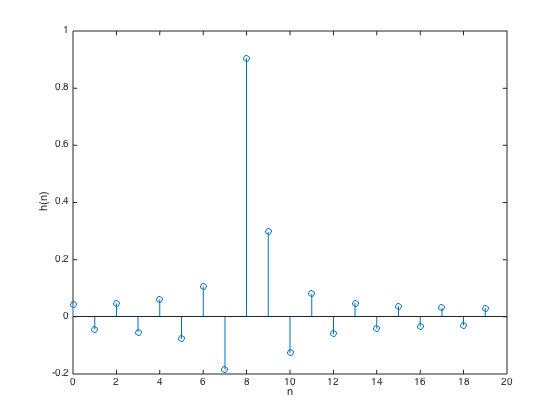
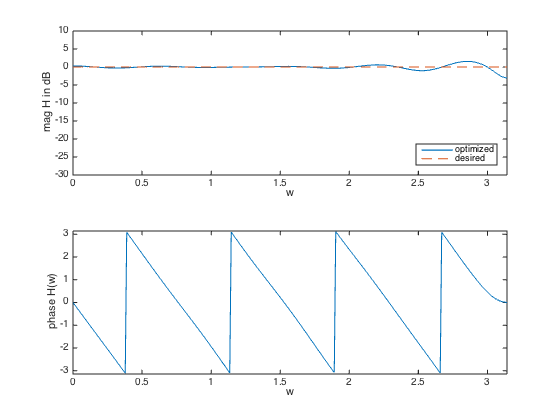

% "Filter design" lecture notes (EE364) by S. Boyd % (figures are generated) % % Designs an FIR filter given a desired frequency response H_des(w). % The design is judged by the maximum absolute error (Chebychev norm). % This is a convex problem (after sampling it can be formulated as an SOCP). % % minimize max |H(w) - H_des(w)| for w in [0,pi] % % where H is the frequency response function and variable is h % (the filter impulse response). % % Written for CVX by Almir Mutapcic 02/02/06 %******************************************************************** % problem specs %******************************************************************** % number of FIR coefficients (including the zeroth one) n = 20; % rule-of-thumb frequency discretization (Cheney's Approx. Theory book) m = 15*n; w = linspace(0,pi,m)'; % omega %******************************************************************** % construct the desired filter %******************************************************************** % fractional delay D = 8.25; % delay value Hdes = exp(-j*D*w); % desired frequency response % Gaussian filter with linear phase (uncomment lines below for this design) % var = 0.05; % Hdes = 1/(sqrt(2*pi*var))*exp(-(w-pi/2).^2/(2*var)); % Hdes = Hdes.*exp(-j*n/2*w); %********************************************************************* % solve the minimax (Chebychev) design problem %********************************************************************* % A is the matrix used to compute the frequency response % A(w,:) = [1 exp(-j*w) exp(-j*2*w) ... exp(-j*n*w)] A = exp( -j*kron(w,[0:n-1]) ); % optimal Chebyshev filter formulation cvx_begin variable h(n,1) minimize( max( abs( A*h - Hdes ) ) ) cvx_end % check if problem was successfully solved disp(['Problem is ' cvx_status]) if ~strfind(cvx_status,'Solved') h = []; end %********************************************************************* % plotting routines %********************************************************************* % plot the FIR impulse reponse figure(1) stem([0:n-1],h) xlabel('n') ylabel('h(n)') % plot the frequency response H = [exp(-j*kron(w,[0:n-1]))]*h; figure(2) % magnitude subplot(2,1,1); plot(w,20*log10(abs(H)),w,20*log10(abs(Hdes)),'--') xlabel('w') ylabel('mag H in dB') axis([0 pi -30 10]) legend('optimized','desired','Location','SouthEast') % phase subplot(2,1,2) plot(w,angle(H)) axis([0,pi,-pi,pi]) xlabel('w'), ylabel('phase H(w)')
Calling SDPT3 4.0: 1199 variables, 321 equality constraints
For improved efficiency, SDPT3 is solving the dual problem.
------------------------------------------------------------
num. of constraints = 321
dim. of socp var = 899, num. of socp blk = 300
dim. of linear var = 300
*******************************************************************
SDPT3: Infeasible path-following algorithms
*******************************************************************
version predcorr gam expon scale_data
NT 1 0.000 1 0
it pstep dstep pinfeas dinfeas gap prim-obj dual-obj cputime
-------------------------------------------------------------------
0|0.000|0.000|3.9e+02|2.4e+01|1.9e+05| 0.000000e+00 0.000000e+00| 0:0:00| chol 1 1
1|0.986|1.000|5.4e+00|3.0e-01|2.7e+03|-1.206201e-03 -3.513921e+01| 0:0:00| chol 1 1
2|0.995|1.000|2.6e-02|3.0e-02|4.4e+01|-8.587413e-04 -3.114402e+01| 0:0:00| chol 1 1
3|1.000|0.955|4.0e-08|9.4e-03|4.3e+00|-2.413584e-03 -4.280144e+00| 0:0:00| chol 1 1
4|0.955|0.914|3.1e-08|1.1e-03|1.3e+00|-2.495524e-02 -1.327064e+00| 0:0:00| chol 1 1
5|1.000|0.580|1.6e-10|4.7e-04|7.3e-01|-6.526725e-02 -7.919301e-01| 0:0:00| chol 1 1
6|0.501|1.000|7.3e-11|3.0e-06|5.7e-01|-3.874148e-01 -9.557116e-01| 0:0:00| chol 1 1
7|0.851|0.960|1.6e-11|4.1e-07|1.6e-01|-5.680266e-01 -7.295716e-01| 0:0:00| chol 1 1
8|0.854|1.000|4.2e-12|3.0e-08|2.8e-02|-6.822029e-01 -7.098235e-01| 0:0:00| chol 1 1
9|0.972|0.985|1.2e-12|3.4e-09|7.3e-04|-7.064224e-01 -7.071558e-01| 0:0:00| chol 1 1
10|0.986|0.989|1.6e-14|3.4e-10|1.7e-05|-7.070901e-01 -7.071074e-01| 0:0:00| chol 1 1
11|0.983|0.989|5.0e-16|4.7e-12|5.2e-07|-7.071063e-01 -7.071068e-01| 0:0:00| chol 1 1
12|0.563|0.969|5.5e-12|1.1e-12|2.9e-07|-7.071065e-01 -7.071068e-01| 0:0:00| chol 1 1
13|0.568|1.000|2.0e-11|1.1e-12|1.7e-07|-7.071066e-01 -7.071068e-01| 0:0:00| chol 1 2
14|0.570|1.000|8.6e-12|1.6e-12|9.9e-08|-7.071067e-01 -7.071068e-01| 0:0:00| chol 1 2
15|0.572|1.000|3.7e-12|1.7e-12|5.7e-08|-7.071067e-01 -7.071068e-01| 0:0:00| chol 1 2
16|0.576|1.000|1.6e-12|1.0e-12|3.3e-08|-7.071067e-01 -7.071068e-01| 0:0:00|
stop: max(relative gap, infeasibilities) < 1.49e-08
-------------------------------------------------------------------
number of iterations = 16
primal objective value = -7.07106748e-01
dual objective value = -7.07106781e-01
gap := trace(XZ) = 3.29e-08
relative gap = 1.36e-08
actual relative gap = 1.36e-08
rel. primal infeas (scaled problem) = 1.57e-12
rel. dual " " " = 1.00e-12
rel. primal infeas (unscaled problem) = 0.00e+00
rel. dual " " " = 0.00e+00
norm(X), norm(y), norm(Z) = 1.7e+00, 6.1e+00, 8.9e+00
norm(A), norm(b), norm(C) = 8.4e+01, 2.0e+00, 1.8e+01
Total CPU time (secs) = 0.30
CPU time per iteration = 0.02
termination code = 0
DIMACS: 1.6e-12 0.0e+00 9.2e-12 0.0e+00 1.4e-08 1.4e-08
-------------------------------------------------------------------
------------------------------------------------------------
Status: Solved
Optimal value (cvx_optval): +0.707107
Problem is Solved
 